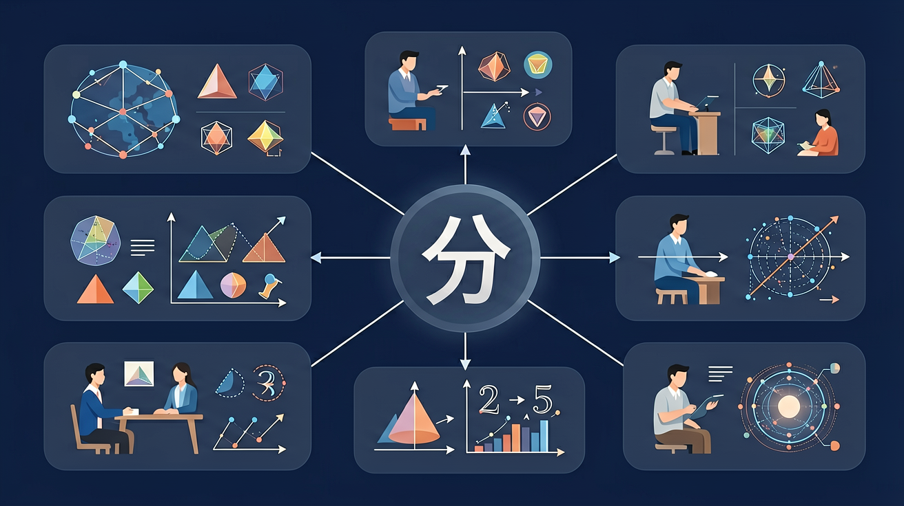

🌍 And（已知）：我们已经有了一定的基础知识
⚡ But（问题）：但还有一个重要概念需要深入理解
💡 Therefore（新知）：因此通过本节课的学习，我们将掌握新知识并能灵活运用
🎯 能说出分数、小数、百分数的互化规则
🎯 能判断购物场景中三种形式的优惠力度
🎯 能计算三者的快速互化（如1/4=0.25=25%）
❓ 为什么0.5和1/2是一回事？
❓ 百分数为什么能和小数互换？
❓ 超市打折时哪种表示最划算？
学完这一课，这些问题你都能自信地回答。
把 0.25 化成百分数，结果是？
✨ 三兄弟互相变身，灵活运用！
And：学生已会整数加减法
But：遇到1个披萨分3份不会算
Therefore：理解分数表示部分与整体关系
分数就像切蛋糕，分母表示切几块，分子表示拿几块。比如把1个西瓜平均分4份，每份就是1/4。特别注意：分母不能为0，因为没法切0份！看这个例子：妈妈买了2米彩带，剪下3/5米做蝴蝶结，剩下的就是2-3/5=7/5米（先通分再减）。
🌍 分披萨时每人拿1/8，喝掉半瓶饮料就是喝1/2，班级1/3同学戴眼镜。
把3块饼干平均分给4个小朋友，每人分到多少？
考试得 75分（满分100分），可以说：
分数：75/100 = 3/4（四分之三）
小数：0.75
百分数：75%（百分之七十五）
三种表达，本质相同！
| 分数 | 小数 | 百分数 |
|---|---|---|
| 1/2 | 0.5 | 50% |
| 1/4 | 0.25 | 25% |
| 3/4 | 0.75 | 75% |
| 1/5 | 0.2 | 20% |
| 2/5 | 0.4 | 40% |
| 1/10 | 0.1 | 10% |
| 1/3 | 0.333... | 33.3% |
选择三种不同商品，分别用分数、小数和百分数表示其折扣，比较哪种折扣方式最优惠。
And：已认识元角分（如3.5元）
But：不知道0.3和3/10的关系
Therefore：建立分数与小数的等价转换
小数点是分数的小魔法师！分母是10/100/1000的分数都能变小数。比如3/10=0.3（3在十分位），7/100=0.07（7在百分位）。看例子：货架标价¥12.5，其实就是12又5/10元，约分后是12又1/2元。特别注意：1/3≈0.333...这样除不尽的情况暂时用≈表示。
🌍 超市价签8.99元就是8又99/100元，体温36.5℃读作36又5/10度。
把0.25化成分数是多少？
And：见过商品打8折（80%）
But：不理解%和分数的联系
Therefore：掌握百分数作为特殊分数（分母100）
百分号%是带着两个0的小精灵，专门表示分母100的分数。比如45%就是45/100=0.45。看这个例子：考试得85分，满分100分就是85/100=85%=0.85。特别注意：100%=1，就像吃完整个蛋糕就是100/100。
🌍 手机电量显示78%，天气预报降水概率30%，饮料瓶标注果汁含量10%。
下列哪个不等于50%？
And：已分别掌握三种形式
But：不会灵活转换应用
Therefore：培养根据场景选择最优表达方式
分数、小数、百分数就像三胞胎，可以互相变身。记住变身口诀：分数化小数→分子÷分母；小数化百分→小数点右移两位加%；百分化分数→去掉%写分母100。例子：2/5=0.4=40%，比较大小时统一变成小数最方便，比如3/4（0.75）比70%（0.7）大。
🌍 比较折扣力度：7折（70%）、2/3（≈66.7%）、0.65（65%），选最大的70%。
哪种形式最适合比较3/8、0.38和37%的大小？
把百分号看成÷100，如75%=75÷100=0.75
分数是平均分，小数是细分位，百分数是统一标准
分数更直观（如1/2个披萨），百分数更适合比较（如考试得分）
用百格图展示25%=0.25=1/4的等价关系
比较折扣：全场8折、0.8价、80% off实际支付相同
🎯 把分数、小数、百分数三种形式配对！
分数
对应小数
学习要用心，理解比死记更重要；多问"为什么"，把知识连成网
💡 常见错误往往就在细节中，仔细检查每一步！
回忆：今天学了哪些关键词和规则？试着说出来。
用自己的话解释今天学的核心概念，不看书能说清楚吗？
用今天的知识解决一个实际问题，或写一个新例子。
把今天的知识与已有知识联系起来：有什么共同点？有什么区别？能不能自己创造一道新题？
先独立作答，再点选项查看对错与错因。
下列哪个选项表示的值最大？
将0.6转换为百分数，正确的是？
将3/5转换为小数，正确的是？
将1/8转换为百分数是____%。
答案：12.5
1除以8等于0.125，0.125乘以100等于12.5。
将0.25转换为分数是____。
答案：1/4
0.25等于25/100，约分后得到1/4。
✅ 60%=0.60，百分位需占位
💡 未理解百分数对应两位小数
✅ 用除法计算：1÷8=0.125
💡 混淆分数线与除号关系
口诀：百分变小数，左移两位够；小数化百分，右移两位凑
类比：像货币兑换：1美元=100美分，1元=10角=100分